Module 2 — Getting Started | Pages 87–98
In this lab, you will complete the full deployment lifecycle for the InTouch application you have been building across Labs 2 and 3. This means creating a ViewEngine to host the application, configuring which windows open at startup, deploying everything to the production node, and finally launching the application in WindowViewer to confirm it runs correctly. By the end of this lab, your Mixer application will be running in production.
The ViewEngine is the runtime host for InTouch applications. Just like the InTouchViewApp, you cannot instantiate it directly from the base template — you must first create a derived template. In the IDE's Templates tab, expand the System toolset, right-click $ViewEngine, and select New > Derived Template. Name it $gViewEngine.
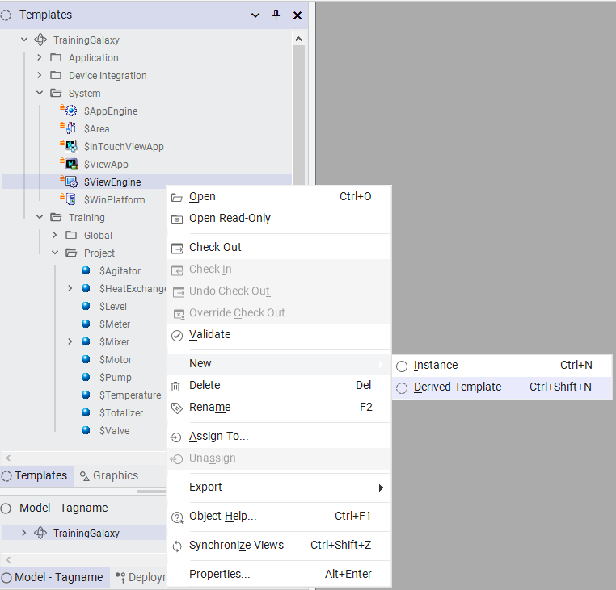
Derived Template">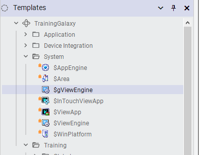
Drag $gViewEngine to the Training\Global template toolset for better organization. Then right-click it and select New > Instance. A new instance named gViewEngine_001 appears in the Deployment view under Unassigned Host.
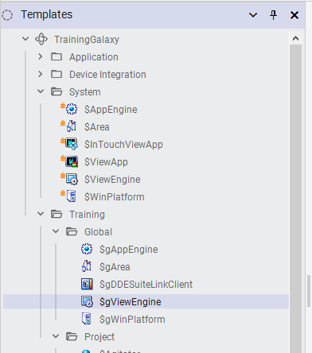
Instance option">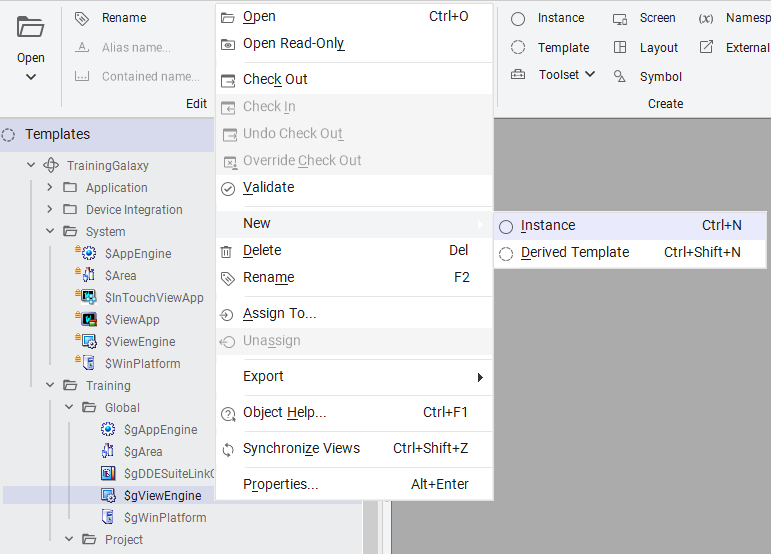
Rename the instance to ViewEngine1 and assign it to PROD_Platform1 by dragging it onto the platform in the Deployment view.
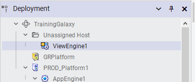
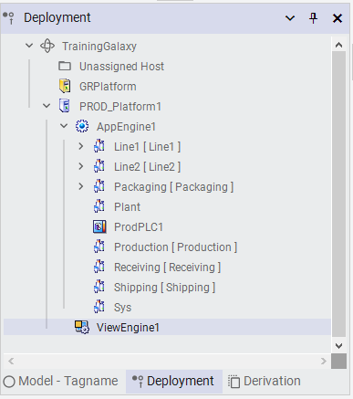
Now you will create an instance of your $MixerView template and assign it to the ViewEngine. In the Templates tab, navigate to Training\ViewApps, right-click $MixerView, and select New > Instance. The default name MixerView_001 is fine — leave it as is. Drag it onto ViewEngine1 in the Deployment view.
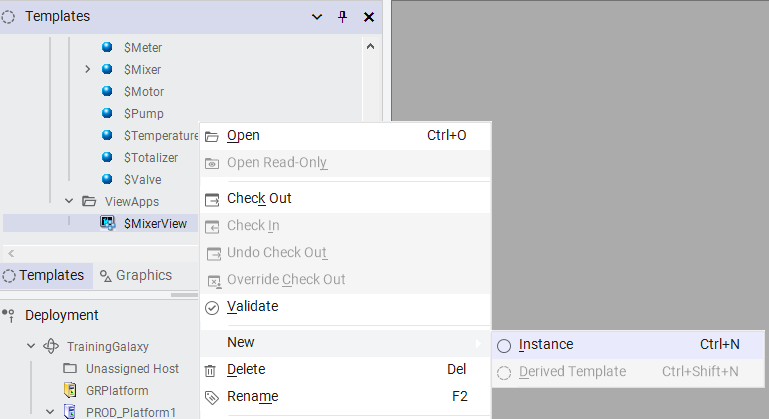
Instance option">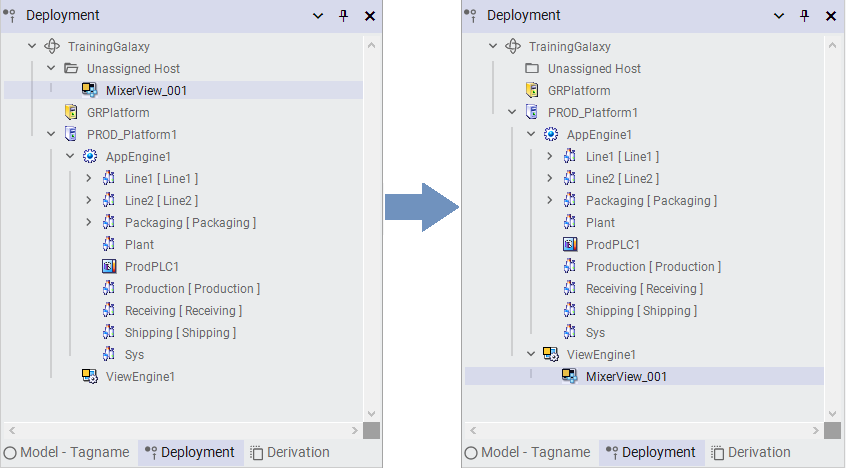
In the Model view, assign both MixerView_001 and ViewEngine1 to the Sys area.
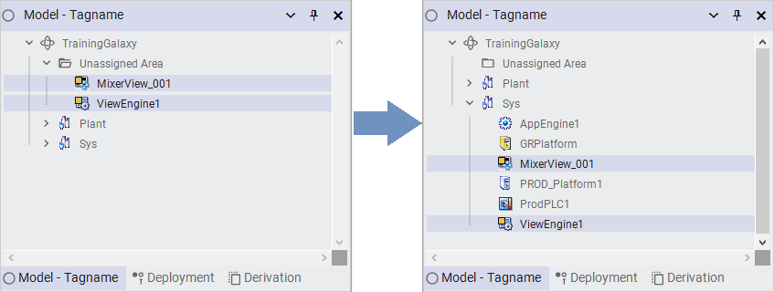
Before deploying, you need to tell WindowViewer which windows should open automatically at startup. Double-click $MixerView to open WindowMaker (it will prompt you to select windows — skip this for now). Navigate to File > Configure > WindowViewer, then select the Startup tab.
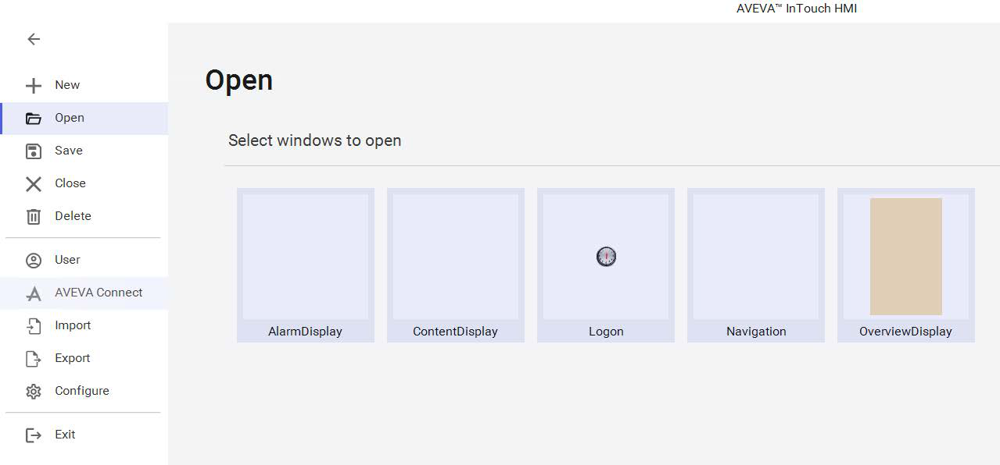
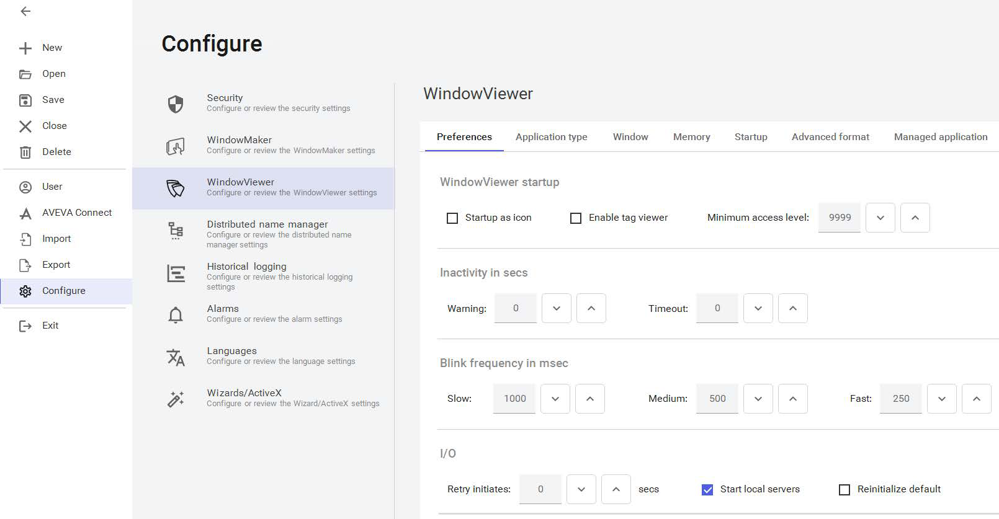
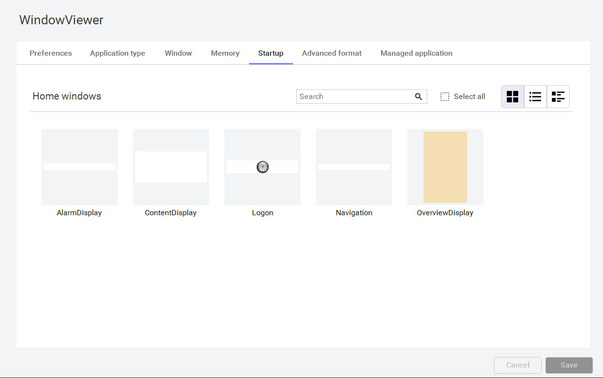
In the Home windows section, select all five windows: AlarmDisplay, ContentDisplay, Logon, Navigation, and OverviewDisplay. Click Save.
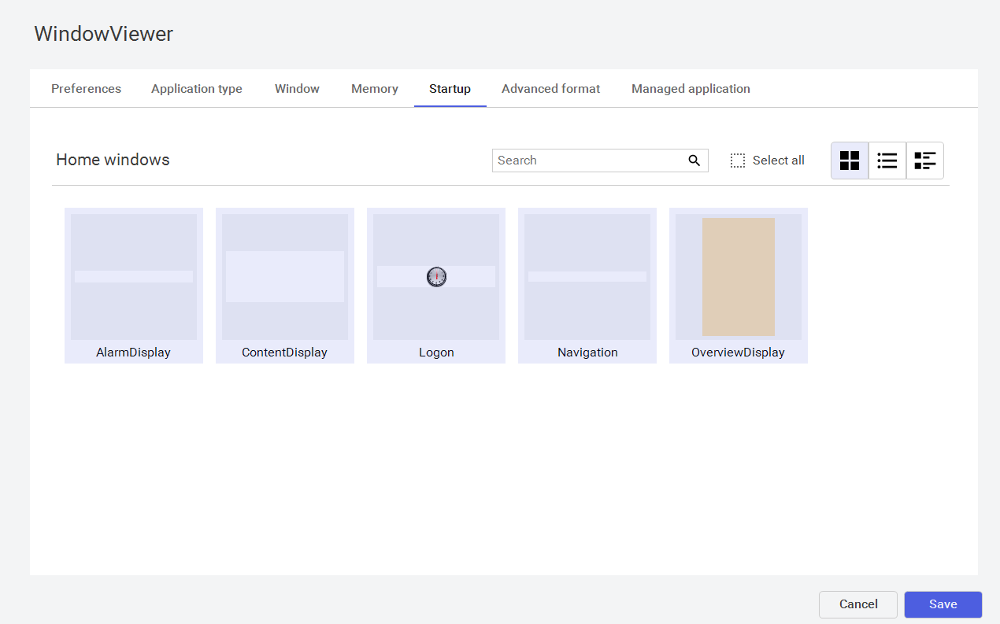
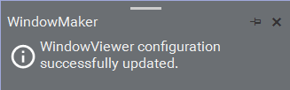
Exit WindowMaker through the backstage menu and check in $MixerView with an appropriate comment.
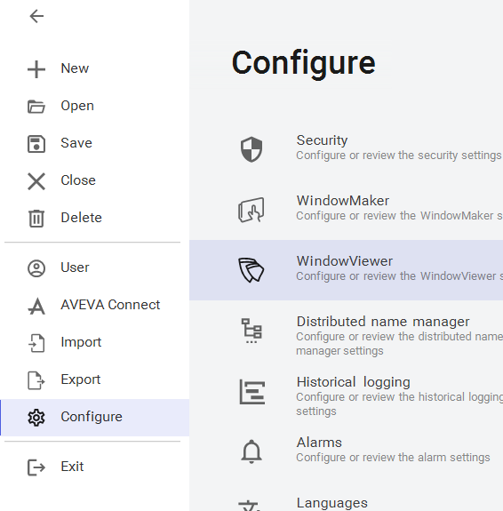
Now comes the actual deployment. In the Deployment view, right-click ViewEngine1 and select Deploy. The Deploy dialog appears — leave all default settings and click Deploy.
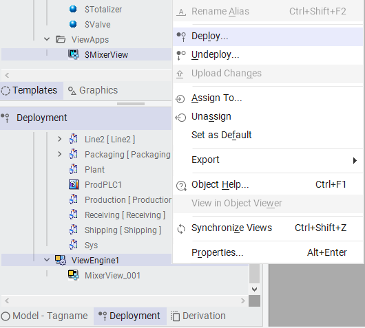
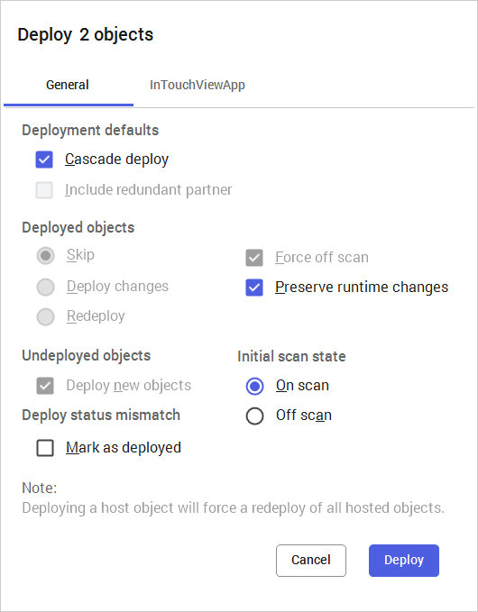
The Deploying Objects dialog shows the deployment progress. When complete, click Close. The icon for MixerView_001 will display an orange synchronization icon during the final sync, then change to a fully deployed state.
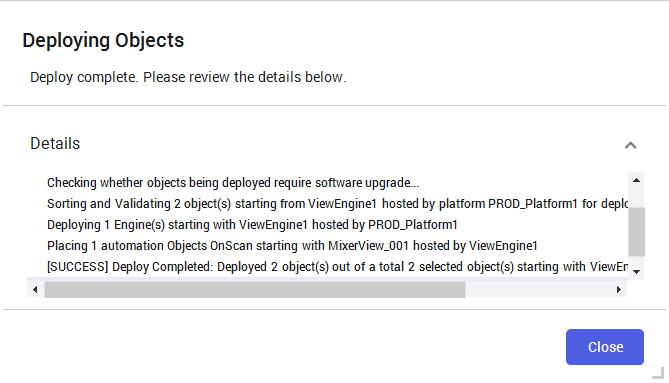
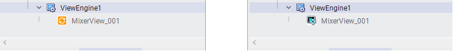
Switch to the production node (your instructor will provide the node name). Open the AVEVA Application Manager from the Windows Start menu. On the InTouch tab, locate the $MixerView tile and click the WindowViewer button.
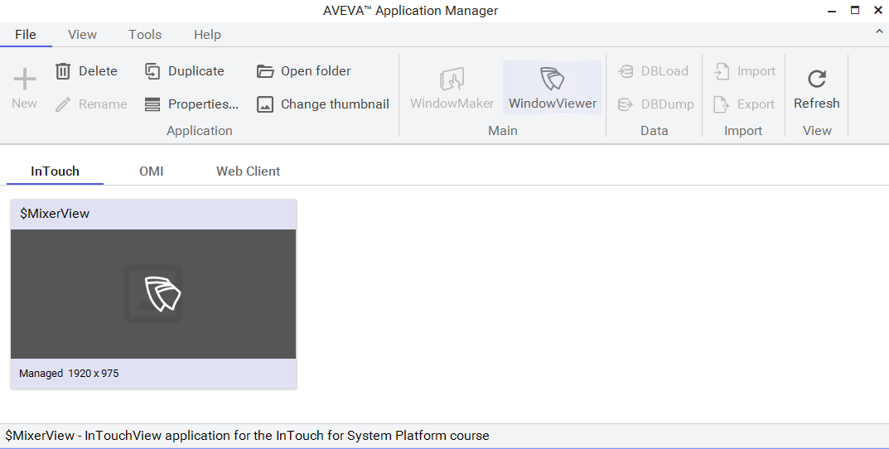
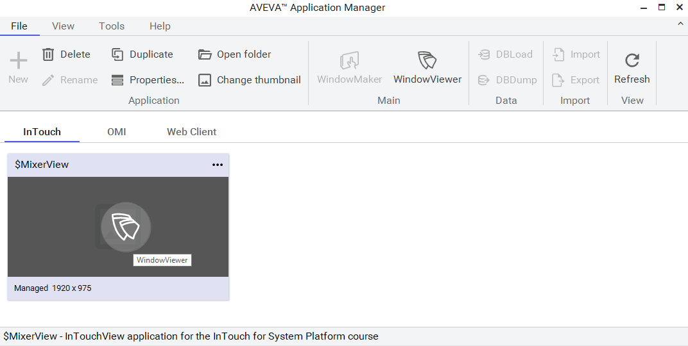
After a few moments, WindowViewer opens and the $MixerView application displays in runtime. Notice that all five home windows open automatically and the analog clock in the Logon window is running with the current time. The application is now live and operational.
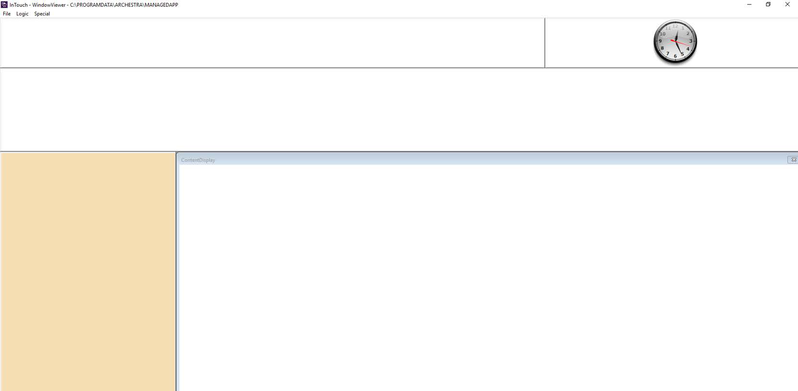
The base $ViewEngine is a system template that cannot be instantiated directly. You must create a derived template (like $gViewEngine) and then create instances from that derived template. This is the same pattern used for InTouchViewApp and other system templates — it protects system templates from accidental modification.
Home windows are the windows that open automatically when WindowViewer starts. You configure them through File > Configure > WindowViewer > Startup tab. In this lab, all five windows (AlarmDisplay, ContentDisplay, Logon, Navigation, OverviewDisplay) were set as home windows.
The orange synchronization icon indicates that the final synchronization of the application on the production node is in progress. The deployment has been pushed to the node, but the application is still syncing files and configurations. Once complete, the icon changes to the fully deployed state.
Deploying from the IDE pushes the application files and configurations from the engineering node to the production node. Launching from the Application Manager starts the WindowViewer runtime on the production node using the already-deployed files. You must deploy first, then launch.
The ViewEngine must be deployed first (or both together using cascade deployment) because it provides the runtime host infrastructure. The InTouchViewApp cannot run without a ViewEngine to host it. The default Deploy dialog uses cascade deployment, which handles this ordering automatically.
Source: AVEVA InTouch for System Platform 2023 Training Manual, Module 2 (pages 87–98)